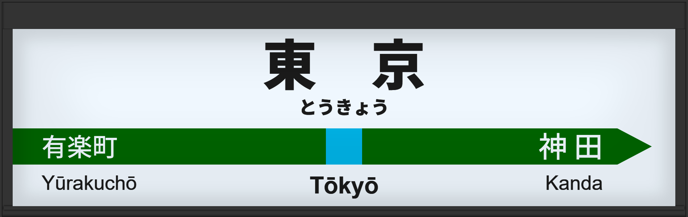

| ←有楽町 | ■ 京浜東北線 | 神田→ |
|---|
1998年7月に初期型ATOS放送を導入。
2006年2月に旧型に更新され、接近放送の文面が「黄色い線まで～」になる。
2013年12月に常磐改良型に更新される。
2016年4月に宇都宮型に更新され、3番線の声優が津田英治氏から田中一永氏に交代する。
2020年1月にはオリンピック開催に向けて、山手線とともに宇都宮改良型へされ、接近放送の文面が「黄色い点字ブロックまで～」になる。
| 3 | ■ 京浜東北線 大宮方面 |
3番線次発予告 3番線接近放送 3番線到着放送 |
常磐改良型で、津田英治氏でした。 放送は「」です。 到着放送の乗換案内は一時的に使われたもので、現在は使われておりません。 |
|---|---|---|---|
| 6 | ■ 京浜東北線 大船方面 |
6番線次発予告 6番線接近放送 6番線到着放送 |
常磐改良型でした。 放送は「」です。 到着放送の乗換案内は一時的に使われたもので、現在は使われておりません。 |
| 3 | ■ 京浜東北線 大宮方面 |
3番線次発予告 3番線接近放送 3番線到着放送 |
旧型でした。 放送は「」です。 |
|---|---|---|---|
| 6 | ■ 京浜東北線 大船方面 |
6番線次発予告 6番線接近放送 6番線到着放送 |
旧型でした。 放送は「」です。 |
| 3 | ■ 京浜東北線 大宮方面 |
3番線次発予告 3番線接近放送 3番線到着放送 |
初期型で、接近放送の文面が「黄色い線の内側まで～」でした。 放送は「快速 大宮行」です。 |
|---|---|---|---|
| 6 | ■ 京浜東北線 大船方面 |
6番線次発予告 6番線接近放送 6番線到着放送 |
初期型で、接近放送の文面が「黄色い線の内側まで～」でした。 放送は「快速 桜木町行」です。 |
| 3 | ■ 京浜東北線 大宮方面 |
3番線次発予告 3番線接近放送 |
文面がさらに継ぎ接ぎでした。 放送は「」です。 |
|---|---|---|---|
| 6 | ■ 京浜東北線 大船方面 |
6番線次発予告 6番線接近放送 |
文面がさらに継ぎ接ぎでした。 放送は「各駅停車 東神奈川行」です。 |